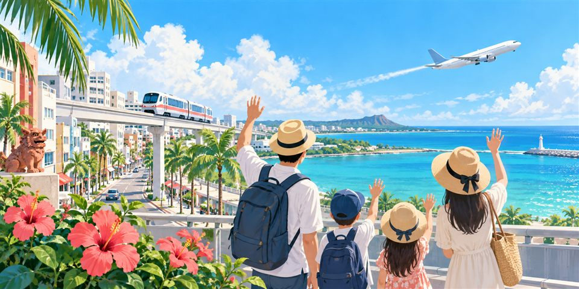

키지무나 · 우미카지테라스점 3.49
きじむなぁ ウミカジテラス店 · 沖縄県 豊見城市瀬長174-6 ウミカジテラス오므타코·1일차 우미카지 점심 기본 후보.
주차: 섬의 방문객 주차 구획을 이용하고 보행 이동 여유 확보.
3박 4일 · 가족여행
바다·수족관·쇼핑을 아이와 어른 모두 여유롭게
공항·우미카지(남부) → 라이캄·차탄(중부) → 온나 숙박과 북부 관광 → 나하 순서입니다. 온나도 지역 구분상 북부입니다.
1일차에는 호텔에서 차탄을 왕복하고, 2일차에는 츄라우미·세소코에서 온나로 돌아옵니다. 3일차에 나고·고우리로 다시 북상합니다.
온나 2박과 물놀이 후 객실 샤워·휴식을 우선한 동선입니다. 3일차 고우리 이후에는 만좌모·Gala·코자에 들르지 않고 나하로 갑니다. 이동시간은 교통·주차에 따라 달라집니다.
DAY 1 · 10월 8일
첫날은 무리 없이 서부 해안에 적응
04:45편 예매 완료. 탑승 10분 전 대기하고 정류장까지 이동·짐 싣는 시간은 별도로 확보
10/8 경기고속편 예매 완료. 약 1시간 25분·요금 12,500원. 탑승 인원과 아동 좌석은 예매 내역에서 최종 확인
08:00 출발까지 약 1시간 50분. 체크인·수하물 접수 후 보안검색·출국심사·탑승구 이동
예약서 기준 T1 → 나하 10:30 도착. 운항·수속 마감·탑승구는 항공사 최신 안내 확인
입국·수하물 후 렌터카 셔틀 이동
카시트, ETC 카드와 짐 적재 확인
바다 전망과 함께 타코라이스. 주차 무료
몽벨·칼디 2층 방문, 1·2일차 간식과 생수 구입
14:50 출발일몰을 볼 날은 수영장·해변 휴식을 16:30까지로 짧게. 피곤하면 차탄 이동 없이 호텔에서 저녁
호텔 16:45 출발 목표 → 17:35 주차·해안 도착 목표. 나하 기준 10/8 일몰 18:09, 차탄은 참고값이며 구름·교통에 따라 달라짐. 일몰 후 저녁
예매 완료: 세이브존 04:45 출발 → T1 06:10 도착 예상(요금 12,500원). 세이브존 정류장까지 이동은 별도입니다.
더 이른 세이브존 04:25편은 05:50 도착 예상, 표시 요금 12,500원입니다. 포레스티아 서문 05:10편은 06:40 도착 예상, 11,900원입니다.
04:45편 예매 완료. 출발 전 예매 내역의 탑승 인원·승차 위치를 다시 확인하고 항공사 체크인 마감 시각도 확인하세요. 국내 버스비는 엔화 여행 예산에서 제외합니다.
7명은 대기가 길 수 있어 18:30 전 입장 권장
일몰 후 저녁은 HAN’S·돈카츠타로·KISEKI·MEXICO 중 한 곳, 커피는 지바고 로스터리 또는 샌프란시스코 중 한 곳만. Transit은 미야기 해안으로 장소를 바꿀 때 선택합니다. 하마야·King Side는 낮 영업이라 현재 일몰 후 일정에 넣지 않습니다.
DAY 2 · 10월 9일
세소코 유지 · 오후 투어 시간은 예약 후 확정 · 호텔 샤워·휴식
조식 포함 · 수영복·수건·젖은 장비용 가방 준비
운전 약 70분에 주차·도보 여유를 더해 09:00 입장 목표
10:00쯤 오키짱 극장으로 이동해 돌고래쇼 관람 후, 11:30까지 수족관 관람을 이어갑니다. 고래상어 수조를 보고 오후 먹이 프로그램은 생략
공식 시간표의 10:30 회차를 관람합니다. 고래상어 먹이 관람과는 별도 프로그램이며, 혼잡·당일 운영 변경을 확인하세요.
공식 쇼 시간표 →이동 포함 12:30 식사 종료 목표. 투어 집합 장소로 가는 길에서 한 곳만 선택
예약한 집합 장소·시간 우선. 엄마·아이 대기 공간과 투어 후 합류 장소 확인
15:00 종료를 가정한 잠정 일정. 성인 5명 참여, 엄마·아이는 같은 해변에서 휴식. 오후 투어 가능 시간·운항·장비 포함 여부 확인 후 확정
모래·소금기를 씻고 마른 옷으로 갈아입은 뒤 15:30 출발. 샤워 5분 ¥500, 500엔 동전과 100엔 동전 5개 준비
30분 이내 이용. 늦으면 공식 안내의 드라이브스루·전화 주문으로 전환
20~30분만 보고 출발. 세소코 출발이 15:40을 넘거나 비·강풍이면 생략
객실에서 깨끗이 씻고 휴식. 19:00 저녁 예약에 늦지 않도록 만좌모에서 17:40까지 출발
호텔 근처 예약 식사. 투어 지연 시 식당에 연락
점심은 이동 경로·대기시간 우선. 카진호 피자는 바로 입장하고 집합 시간을 지킬 수 있을 때만, fuu cafe도 영업·대기를 확인해 한 곳만 선택합니다.
츄라우미 P6·P7 주차·도보 여유를 확보하고 11:30 출발합니다. 점심 대기로 투어에 늦지 않도록 포장식도 고려합니다. 파고가 높거나 시설 미운영 시 스노클링은 취소하고 수족관 관람을 늘리거나 호텔에서 쉽니다.
공식 안내·개인 후기: 세소코 / 瀬底 · 츄라우미 / 美ら海 · 입장 / 入場 · 세소코 참고 / 瀬底参考
DAY 3 · 10월 10일
북부 두 곳을 보고 나하로 남하 · 14시 고우리 출발
조식 포함 · 체크아웃 전 짐과 귀중품 확인
온나에서 북쪽 나고로 이동. 파인애플파크 10시 개장에 맞춤
11:30까지 관람·쇼핑. 성인 6명과 5세 1명 입장료 합계 ¥9,800
주차 여유 포함 약 40분 예상
소라하시 등 대교 주변에서 한 곳 선택. 7명 대기가 길면 간단식으로 전환
사진·짧은 휴식. 오션타워·하트록은 추가하지 않고 14:00 출발
이동·교통·짧은 휴식에 약 2시간 배정. 만좌모·Gala·코자 경유 없이 남하
전용 주차장 없음. 인근 주차장 입출차 조건을 확인하고 짐 정리 후 도보 이동. 전야 행사·주차 안내
18:30까지 쇼핑. 도착이 늦으면 한 곳만 선택
7명 예약 권장. 돈키호테는 저녁 후 여력이 있을 때만
점심은 고우리섬 소라하시 등 대교 주변. 찰리 타코스는 기본 동선에서 제외하고 기존 식당 목록에 대안으로 보관합니다.
파인애플파크 10:00~18:00(최종 입장 17:30), 무료 주차. 고우리에서는 14:00 출발을 지키고 비·강풍이면 생략 후 나하로 갑니다. 돈키호테 면세 카운터는 4층이라는 후기 참고, 현장 안내와 여권 원본 확인. 아이는 같은 해변에서 보호자와 짧게 쉬고 별도 원정은 하지 않습니다.
공식 안내·개인 후기: 공식 운영·요금 · 고우리 접근 안내 · 돈키호테 / ドンキ

DAY 4 · 10월 11일
성인 2명은 먼저 공항, 나머지는 나하 점심
짐과 항공편을 따로 확인하고 먼저 이동
알파드는 이 팀이 계속 사용
나미노우에 신사 또는 국제거리 짧은 산책
예약 불가라 오픈 시간에 맞춰 방문
주유 후 셔틀로 공항 이동
수속·면세점·간식 구입
ZE632 · 17:35 도착 예정
잭스 대기가 길면 사카나 다이토료를 사전 선택하거나 가까운 포장식으로 변경합니다. 11:20까지 착석 여부로 대기 중단을 판단합니다. 12:10 반납 장소까지 실제 이동·주유 시간을 역산해 출발 마감을 정하고, 늦으면 다른 인기 식당으로 옮기지 않고 포장식 또는 공항 식사로 전환합니다. 우라소에 카페·이토만 시장·야기야는 귀국일에 추가하지 않습니다.
10/10(토) 전야 행사: 국제거리와 교차 도로의 팔레트쿠모지 교차로~사이온바시 구간이 17:15~20:30 차량 통제됩니다. 체크인 후 차를 세우고 도보로 잠깐 볼 수는 있지만, 7명 가족과 아이가 움직이기에는 혼잡하므로 국제거리 쇼핑·저녁 예약의 이동 여유를 둡니다.
숙소 전용 주차장 없음: 축제 방문 차량까지 몰릴 수 있으므로 출발 전에 알파드가 들어가는 인근 코인주차장 후보를 2~3곳 정합니다. 만차에 대비해 차량 크기 제한, 24시간 입출차, 통제 구간과 겹치는 진입로를 확인하고 축제 관람을 위한 추가 주차는 하지 않습니다.
10/11(일) 귀국일: 국제거리·교차 도로는 10:15~13:00, 국도 58호선 이즈미자키~마츠야마와 교차 시도는 13:10~18:00 차량 통제됩니다. 15:00 비행편이라 본행사 관람은 불가능하고 행렬을 잠깐 보는 일정도 권하지 않습니다. 정체가 시작되면 산책·점심을 생략하고 주유·렌터카 반납·공항 이동을 우선합니다.
렌터카 반납점이 정해지면 지정 주유소와 통제를 피하는 출발 시각·경로를 다시 확정합니다. 나하시 관광협회 공식 축제 안내 · 2026 공식 교통통제 지도
별도 원정 없이 원래 동선에서 30~60분 쉬어가는 선택지
장보기 중 아이가 지치면 푸드코트·실내 키즈 공간에서 한 팀이 쉬고, 다른 팀이 몽벨과 마트를 봅니다.
안치비치는 놀이터가 아니라 스노클링 후보였습니다. 기본안은 엄마와 5세 아이가 같은 세소코비치에서 그늘·모래놀이·카페 휴식으로 기다리고, 성인 5명은 예약한 체험에 참여하는 방식입니다. 알파드 1대를 함께 주차하므로 별도 하차·픽업 원정을 하지 않습니다. 입수하지 않아도 파도에서 충분히 떨어지고 아이 혼자 물가에 보내지 않습니다.
물·모자·갈아입을 옷·그늘 확보를 준비하고 화장실·카페 운영을 당일 확인합니다. 바람·폭염·비가 심하거나 대기 공간이 마땅치 않으면 체험을 줄이거나 전원이 호텔 휴식으로 변경합니다. 운영자가 안치해변/다른 장소로 바꾸면 집합·주차·엄마아이 대기 공간을 먼저 확인합니다.
수족관 관람 중 시간이 남을 때만 해양박공원 놀이터를 짧게 이용합니다. 11:30 출발과 오후 투어 접수를 우선하고 비·시설 통제를 확인합니다. 공식 이용 상태
점심 뒤 같은 해변에서 보호자와 모래놀이·휴식. 별도 놀이터 원정 없이 14:00 나하 출발을 지킵니다.
점심 전 시간이 남을 때만 바닷가 공원에서 20~30분. 비나 더위가 심하면 바로 식당으로 이동합니다.
※ 운영시간·시설 상태는 당일 현장에서 확인하는 가벼운 대안입니다.
64 / 64곳
필터는 확인된 식당 64곳에 적용됩니다. 주소·지점 확인이 필요한 항목은 아래에 별도로 보관했습니다. 지도·점수는 각 카드에서 확인하세요.
64개 지점 · 각 시간대에 식사/카페 한 곳만 고르세요. 모두 추가하는 일정이 아닙니다. 점수·영업 정보는 2026.9.27 확인, 별점보다 동선·대기·7명 좌석을 우선합니다.
카진호 — 1인 ¥1,000~1,999 · 예약 불가·현금. 화·수 휴무, 11:30부터. 7명 동석·아이 메뉴·주차 가능 여부는 현장에서 확인; 대기가 길면 포장 대안으로. 타베로그 상세 · 구글맵 →
오션부 온나점 — 저녁 1인 ¥3,000~3,999 · 17:00~22:00, 주문 마감 21:30. 예약 시 성인 6명+5세 1명과 좌석 형태 확인. 90분 이용·무연락 15분 지각 자동 취소 안내, 인근 유료주차. 타베로그 상세 · 구글맵 →
티단부이 나하 국제거리점 — 안내 예산 1인 ¥3,000~3,999(실제 주문에 따라 증가). 17:00~00:30, 음식 주문 마감 23:30. 예약 인원에 아이 포함, 7명 같은 테이블 요청. 전석 금연·아이 동반 가능·전용 주차 없음. 타베로그 상세 · 구글맵 →
잭스 스테이크하우스 — 안내 예산 1인 ¥2,000~2,999(실제 주문에 따라 증가). 11:00~22:00·수요일 휴무·예약 불가. 아이 동반 가능, 주차 10대 안내. 귀국일 11:20까지 착석 불가면 대기 중단, 실제 이동·주유 시간을 역산해 12:10 반납 우선. 타베로그 상세 · 구글맵 →
2026.9.27 확인. 1인 예산은 타베로그 안내 범위로 아이 요금·총액을 보장하지 않습니다. 당일 영업·좌석·주차는 매장에 재확인하세요.
오므타코·1일차 우미카지 점심 기본 후보.
주차: 섬의 방문객 주차 구획을 이용하고 보행 이동 여유 확보.
타코라이스·오므타코, 1일차 가벼운 저녁 대안.
주차: 미하마 공영 주차 후 도보, 실제 구획·폐문 시간 확인.
간단한 스테이크 대안. 미하마점과 다른 지점, 몰 영업·주문 마감 확인.
주차: 매장/몰 이용 고객 주차 조건 확인. 외부 관광만 하며 무단 이용 금지.
스테이크·바다 전망. 21:00까지·월/화 휴무·예약 불가, 팁 제도 확인. 차탄 일몰 대신 마리나를 고를 때.
주차: 주차장 있음. 입구 안내·당일 입장 조건 확인.
바다 전망 카페·저녁. 저녁 17:00~22:00·화/일 휴무. 미야기 해안 일몰로 대체할 때, 7명 예약 확인.
주차: 해안의 주차 허용 구획만 이용. 하마야 바로 앞 도로 주차 금지, 노상 공간을 보장하지 않음.
스테이크·11:00~21:00(음식 주문 마감 20:30). 아메리칸빌리지 일몰 후 저녁 후보.
주차: 주차장 있음. 건물/공영 주차 구획과 이용 조건 확인.
돈카츠·11:30~21:15 안내. 일몰 후 저녁 대안, 마지막 주문은 당일 확인.
주차: 주차장 있음, 알파드 구획 폭 확인.
스테이크·11:00~00:00(주문 마감 23:00), 예약 불가·카드 불가 안내. 기존 이온몰 차탄점과 다른 지점.
주차: 13대 안내, 매장 구획 확인.
소바·수요일 휴무 안내. 공식 안내의 저녁 주문 마감은 20:00, 타베로그와 시간 차이가 있어 당일 확인.
주차: 주차장 있음, 사용 가능한 구획 확인.
타코라이스·11:00~22:00(주문 마감 21:30). 제공 목록의 미하마 주소 대신 현재 이헤이 지점으로 확인.
주차: 주차장 있음. 지도에서 현재 지점 주소 확인.
피자·11:00~21:00·수 휴무. 일몰 후 간단식·포장 후보.
주차: 주차장 있음, 호텔 투숙객 전용 구획과 구분.
브런치·저녁 대안. 11:00~20:30 안내로 이른 아침 영업은 확인되지 않음. 스나베로 별도 이동 필요.
주차: 주차장 있음, 대수 미확인.
타코·10:30~20:00·수 휴무·예약 불가. 제공된 기노완 이사 주소는 이전 표시, 현재 차탄점 기준으로 일몰 후 저녁 대안.
주차: 현재 지점 주차를 확인하지 못함. 매장에 문의하고 허용 구획만 이용.
커피·07:00~22:00·150석 안내·전석 금연. 일몰 후 가족 휴식 후보, 웍스점과 별도 매장.
주차: 주차장 있음, 호텔 전용 구획 구분 또는 공영 주차 후 도보.
커피·08:00~19:00·전석 금연. 지점 미지정은 차탄점으로 선정, 일몰 전후 짧은 방문(늦은 저녁 뒤에는 닫을 수 있음).
주차: 주차장 있음, 미하마 공영 주차 후 도보 후보.
커피·목요일 08:00~01:00 안내. 일몰 후 카페 후보, 테라스 흡연 구역은 아이와 피하기.
주차: 주차장 있음, 미하마 공영 주차 후 도보 후보.
버거·낮 식사 대안. 09:00~17:00, 저녁에는 불가·예약 불가.
주차: 주차장 있음, 대수 미확인.
소바·10:00~17:30(주문 마감 17:00), 예약 불가·현금. 현재 일몰 후 저녁으로는 늦어 낮 식사로 변경할 때만.
주차: 매장 옆 2대+제2주차장 7대 안내. 만차 때 도로에 대기 주차하지 않기.
모치·디저트. 11:00~19:00·수 휴무. 낮에 차탄으로 경로를 바꿀 때, 일몰 우선이면 방문 생략.
주차: 7대 안내, 짧은 포장 방문도 매장 구획 이용.
빙수·12:00~19:00(수 14:00까지). 낮 미야기 해안 방문 대안, 일몰 시간을 빼앗지 않게 포장/짧은 휴식.
주차: 전용 주차 없음. 인근 공영 주차 허용 구획 확인.
커피·09:00~일몰 안내. 1일차 해변 일몰 산책 중 테이크아웃 후보, 일몰 후에는 로스터리점으로.
주차: 주차장 있음, 미하마 공영 주차 후 도보 후보.
커피·08:00~22:00. 지점 미지정 목록에서 라이캄 주변 지점 선정. 1일차 몽벨/장보기 시간을 줄여 실내 휴식으로 대체할 때.
주차: 주차장 있음. 몰 주차를 외부 카페 주차로 사용하지 않기.
커피·브런치·08:00~14:00·수/목 휴무 안내. 10/8 목요일은 기본안 제외, 3일차 관광을 줄여 차탄 브런치로 바꿀 때만.
주차: 주차장 있음, 대수 미확인.
2일차 점심 기본 후보·11:40 이내 입장 가능할 때만, 현금·예약 불가. fuu와 두 곳 연속 방문하지 않기.
주차: 주차 혼잡·도보 시간을 감안, 구획 미확인 시 매장 안내 확인.
섬 안 점심 대안·11:00~14:30·수/목 휴무. 공식 관광 안내는 점심 예약 불가, 저녁 예약 가능으로 구분. 세소코를 떠나기 전에 선택.
주차: 20대 안내, 섬 안 골목·매장 진입로 확인.
소바·스노클 취소 또는 점심 대체 후보, 대기·현금·품절 가능성 확인.
주차: 주차 구획 미확인. 시장 주변의 허용된 주차장을 확인하고 도보.
3일차 고우리섬 점심 후보. 12:10 도착 예상, 7명 좌석·대기 확인 후 14:00 섬 출발.
주차: 주차장 안내를 따라 이용, 고우리 출발 14:00 유지.
바다 전망 카페. 늦은 고우리 도착 때는 영업 종료 가능, 확인되면 소라하시 대신 한 곳만.
주차: 주차 구획·현재 영업 미확인, 당일 문의.
버거·11:00~17:00(주문 마감 16:30), 16:00 이후 포장만·예약 불가. 세소코에서 남쪽으로 되돌아가므로 카진호 대신 선택하고 대기 길면 생략.
주차: 약 40대 안내. 입구·가게 구획 확인.
스테이크·11:00~21:00(주문 마감 20:30), 현금·예약 가능. 2일차 점심을 대체하되 수족관 13:20 목표 유지.
주차: 주차장 있음, 대수 미확인.
카페·09:00~16:00·예약 불가 안내. 3일차 고우리 점심을 대체할 때만 선택하고 카페를 연속 추가하지 않습니다.
주차: 주차장 있음, 대수 미확인.
2일차 오후 투어가 취소될 때 비세 산책과 묶는 카페 대안. 영업일·주문 마감을 확인합니다.
주차: 주차장 있음, 마을 골목 진입·주차 조건 확인.
닭꼬치·이자카야. 10/9 금요일은 저녁만 17:30~23:00. 비세에서 저녁을 먹으면 온나 19:00 예약을 사전 변경하고 호텔 귀환이 늦어짐, 기본안에는 추가하지 않기.
주차: 10대 안내, 7명 좌석 예약·금연 자리 확인.
샤부샤부·2일차 19:00 예약 식사 후보. 다른 저녁 식당을 선택하면 기존 예약부터 변경.
주차: 인근 유료 주차, 매장에 7명 좌석·주차 문의.
타코 요리·11:00~15:00/17:00~21:00. 2일차 호텔 근처 저녁 대안(기존 예약을 취소/변경한 경우만), 임시 휴무 확인.
주차: 주차장 있음, 매장 구획 확인.
요미탄 우회 카페 후보. 현재 파인애플파크·고우리·나하 일정에는 추가하지 않습니다.
주차: 77대+인근 주차 안내. 지정 구획 이용, 리조트 투숙객 구획과 구분.
팬케이크·08:00~16:00(주문 마감 15:00), 10석·예약 가능. 3일차 Gala로 내려가는 길에 관광 하나를 줄여 방문, 2일차 늦은 저녁 불가.
주차: 주차장 있음, 7명 좌석 예약과 주차 확인.
코자 방문으로 일정을 바꾸는 경우의 간단식 후보. 현재 기본 동선에서는 제외합니다.
주차: 좁은 주차 공간 후기가 있어 알파드 진입·구획은 당일 확인.
타코·11:00~17:30, 목 휴무(공휴일 예외), 품절 조기 마감. 3일차 기본 점심·예약은 포장만 가능.
주차: 안내된 시영 주차장/BC코자 유료 구획을 확인. 도로에 대기 주차하지 않기.
베이커리·평일 08:00~17:00/주말 11:00~17:00. 3일차 찰리 타코스 식사 전후 짧은 포장 후보.
주차: 전용 주차 없음. 코자 주차 후 도보로 묶기.
라멘·11:00~00:30·101석·예약 불가. 3일차 나하로 내려가며 점심/저녁을 대체할 때, 카페와 연속 추가하지 않기.
주차: 주차장 있음, 알파드 구획 확인.
해산물·11:00~18:30. 해피모어 파머스마켓과 같은 시설, 3일차 나하 이동 중 찰리 대신 식사+짧은 장보기로 변경할 때.
주차: 시설 공동 무료 주차 200대 공식 안내. 식사와 마켓을 한 번에 이용.
버거·06:00~02:00, 아침 메뉴 11:00까지. 3일차 나하 이동 중 간단식·포장 후보, 귀국일 북쪽 우회는 피하기.
주차: 100대 안내, 주문 방식·주차 구획 확인.
닭·계란 요리·평일 11:00~22:00, 주말 07:00부터. 3일차 나하로 내려가며 식사 대체, 파르코시티점과 구분.
주차: 주차장 있음, 대수 미확인.
닭·계란 요리·2층 푸드홀(목록의 3층 정정), 10:00~22:00. 3일차 비가 오면 라이캄/리우보 쇼핑을 파르코시티로 바꿀 때.
주차: 몰 공용 주차장 이용. 7명은 푸드홀 좌석 먼저 확보.
빵·이탈리안·11:00~22:00. 지점 미지정 목록은 동선상 파르코시티점으로 선정, 쇼핑 장소를 바꿀 때만 방문.
주차: 몰 공용 주차장 이용, 층·출입구 위치 촬영.
커피·원두. 항구마을에서 포장 위주(실내 벤치 1개), 7명 좌석 기대 금물. 지점 안내 11:00~18:30와 다른 표기가 있어 시간 재확인.
주차: 매장 앞 2대. 남의 매장 구획 사용 금지, 공동 주차 여부 확인.
과일 타르트·11:30~19:00·화 휴무 안내. 3일차 나하 이동 중 카페 한 곳만 고를 때, 포장 활용.
주차: 3대 안내. 미나토가와 골목이 좁아 주차 찾기로 일정 지연하지 않기.
카눌레·11:30~18:00·품절 종료. 미나토가와에서 디저트 한 곳만 선택, 귀국일 추가 우회 비추천.
주차: 전용 주차 없음. 허용된 공용/코인 구획 확인 후 도보.
아이스크림·10:00~22:00. 지점 미지정은 나하 이동 동선의 본점으로 선정, 식사 후 짧은 포장 후보.
주차: 주차 이용 조건 미확인. 공식 매장 안내·현장 표지 확인.
베트남 요리·11:00~15:00/17:30~21:00·월 및 첫째 화 휴무. 3일차 찰리 대신 점심을 선택할 때, 7명 예약·계단 이동 확인.
주차: 전용 주차 없음. 근처 허용 구획 확인, 길가 하차로 교통 막지 않기.
3일차 19:30 저녁 기본 후보. 예약 인원에 아이 포함, 7명 동석 요청.
주차: 전용 주차 없음. 숙소 주차 후 도보 권장.
장어·티단부이 대신 비교적 고가의 저녁 대안. 상세 주소·예약·영업은 타베로그에서 재확인.
주차: 전용 주차 정보 미확인. 국제거리 숙소에서 도보 여부 확인.
장어·수 휴무. 점심 11:00~15:00/저녁 17:00~22:00, 예약 가능. 국제거리 도보권이 아니므로 저녁 예약·차량 이동을 바꾸는 대안.
주차: 5대 안내, 7명 동석·주차를 예약 때 확인.
소바·11:00~20:00(주문 마감 19:30), 품절 조기 종료·TableCheck 예약 안내. 19:30 티단부이 대신 가려면 앞당겨 입장. 같은 주소의 Tsuboya점과 구분.
주차: 전용 주차 없음. 숙소에서 도보 또는 주변 코인주차장.
라멘·평일 10:00~02:00, 주말 09:00~02:00 안내·예약 불가. 국제거리 저녁 대안, 7명 한자리 보장 없음.
주차: 전용 주차 없음. 숙소 주차 후 걸어가기 권장.
마제멘·토요일 11:30~21:30/일요일 21:00까지, 예약 불가. 국제거리 저녁 대안, 아이는 매운 양념·메뉴 확인.
주차: 전용 주차 없음. 현재 이전 주소 1-3-34로 검색.
철판 스테이크·저녁 17:00~22:00, 코스 예약·7명 좌석 확인. 3일차 티단부이 대안; 코스 식사라 귀국일 촉박한 점심에는 비추천.
주차: 전용 주차 없음. 국제거리 공영/코인주차 또는 도보.
해산물 정식·수~일 10:00~21:00·예약 불가·현금. 4일차 잭스 대신 선택, 항구쪽 우회·대기 포함 출발 마감 유지.
주차: 주차장 있음, 대수 미확인.
스테이크·11:00~22:00·수 휴무·예약 불가. 귀국일 기본 후보. 11:20까지 착석 불가면 대기 중단, 주유·반납 동선을 역산해 12:10 반납을 지키고 필요하면 포장/공항 식사로.
주차: 정면 10대(경차 1대 포함), 제휴 주차 없음. 다른 가게 구획 사용 금지.
새우 요리·11:30~18:00, 화/수 휴무·예약 불가. 동해안 기노자라 현 서해안·북부 동선에 추가하지 않고 관광 하나를 빼고 점심을 바꾸는 원정 대안.
주차: 주차장 있음, 대수 미확인.
여러 점포가 있는 해산물 시장. 평일 09:00~18:00·주말 09:00~19:00. 1일차 우미카지 점심 대신 골라 공항 남쪽으로 우회, 귀국일 추가 방문은 비추천.
주차: 주차장 있음, 시장 공동 구획 확인.
소바·11:00~15:15·화 휴무 안내, 예약 가능. 남부 야에세 원정: 1일차 우미카지 대신 가면 라이캄·체크인 시간을 재계산. 4일차 공항 전에 억지로 추가하지 않기.
주차: 주차장 있음, 대수 미확인.
카페·평일 11:00~17:00/주말 10:00~18:00·수/목 휴무. 동해안 킨 원정이므로 1일차 제외, 다른 관광을 빼는 별도 루트에서만.
주차: 인근 무료 공영 주차 안내. 출입·허용 구획 확인.
KING TACOS · 오야마 — 宜野湾市大山1-24-10 · 제공 주소에 해당하는 지점 미확인, 다른 지점 점수를 붙이지 않았습니다.
Chingones · 미야기 — 北谷町宮城3-51 · 해당 차탄 지점의 타베로그·주차·영업 확인 불가. 킨/코자 지점과 구분.
Obbligato · 차탄 — 北谷町北谷2-17-44 · 제공 주소 미확인. 과거 미하마 지점은 폐점 표시로 현재 추천에 넣지 않았습니다.
Yakiniku Tachibana · 마키시 — 那覇市牧志2-11-1 · 이름·주소 조합 미확인. 찾은 카가미하라 지점으로 임의 교체하지 않았습니다.
Orion draft beer — 오리온 생맥주는 특정 식당이 아닌 맥주 상품으로 확인됐습니다. 식당 카드/타베로그 점수는 붙이지 않고 운전자는 음주하지 않습니다. 공식 상품
주차 “있음”은 빈자리·무료·알파드 적합을 보장하지 않습니다. 실제 출입구와 요금·구획 표지를 우선하세요.
추가로 모두 방문하는 목록이 아닙니다. 기본 일정의 방문지 하나를 바꿔 선택하세요.
기본안은 시설·엄마아이 대기 공간을 확인하기 쉬운 세소코비치입니다. 아래 장소는 가이드·파고·조류·집합 장소 확인 후 바꾸는 후보이지, “파도가 높으면 다른 해변에 가서 입수”하는 플랜이 아닙니다. 엄마·5세 아이는 비참가를 기본으로 합니다.
세소코대교 아래 해변의 가이드 스노클링 후보. 확인한 현지 업체의 투어는 6세 이상으로, 5세 아이에게 같은 상품 참여를 권하지 않습니다. 엄마·아이는 입수하지 않고 그늘에서 대기하되, 비참가자 좌석·화장실·주차·합류를 업체에 확인해야 합니다.
지역 관광 안내는 교량 아래 수로를 유영 금지·빠른 조류·급격한 수심 변화로 경고합니다. 현재 감시 체계는 확인되지 않았으므로 관리 해변처럼 가정하지 않습니다. 주차는 업체 지정/유료 구획을 확인하고 다리·진입로에 주차하지 않습니다.
현지 투어·연령 · 안전·취소 FAQ · 지역 관광 주의사항 · 구글맵
수족관 근처 비세자키는 후쿠기길 산책과 묶기 좋은 북부 후보지만, 포인트별 조류·조수 시간·감시·주차 조건을 확인하지 못했습니다. 가이드가 동행과 당일 가능 여부를 확인한 경우만 2일차 오후 세소코 투어를 대체하며 두 곳을 연속 방문하지 않습니다. 엄마아이는 후쿠기길 산책 또는 업체가 확인한 휴식 장소를 선택합니다.
구명조끼·버디 동행·당일 기상/해상과 운영자 판단을 우선하고, 혼자 입수하거나 술을 마신 뒤 참여하지 않습니다. 개인 후기·SNS 영상은 촬영 당시 기록이지 안전 또는 현재 입수 허용의 근거가 아닙니다.
보내주신 게시물 4개는 본문 접근 제한으로 내용 미확인, 원문 링크만 보존합니다.
2일차 오후 스노클링이 취소될 때 수족관 뒤 비세 후쿠기길을 30~45분 걷는 대안입니다. 투어가 진행되면 추가하지 않습니다. 고우리는 3일차에 방문합니다.
생활 마을이라 알파드는 외곽 허용 주차장에 세우고 도보로 들어갑니다. 무료/유료가 섞여 있으므로 현장 요금 확인, 골목·주민 주차 구획 진입 금지.
별도 어린이 관광지를 추가하지 않습니다. 파인애플파크는 전원 함께 보고, 세소코·고우리에서는 같은 장소에서 보호자와 쉽니다.
부세나 보트는 기존 조사에서 10/9 휴업 예정이었습니다. 현재 기본 일정에는 포함하지 않습니다. 3일차 고우리 대신 선택할 경우에만 파인애플파크 후 남하하면서 운항·대기와 나하 도착 시각을 확인합니다.
4~10월 보트 09:10~17:30·약 20분. 성인 ¥1,560·4세~중학생 ¥780(5세 유료), 엄마+아이 ¥2,340/성인 6명+아이 ¥10,140. 7명은 현장 선착순, 결항·취소 조건 확인 후 구매하고 할인권은 환불 조건도 확인하세요.
무료 주차 약 200대, 승선장까지 도보 약 10분 또는 무료 셔틀. 유모차는 승선 불가, 부교를 걸어 이동합니다. 전망탑은 가파른 나선계단 50개라 아이·어르신 컨디션 고려. 결항이면 다른 바다 체험을 강행하지 않습니다.
세소코에서 A&W 나고점을 거쳐 호텔로 돌아오는 길에 조건부로 들릅니다. 세소코를 15:40까지 출발했을 때만 20~30분 관람하고, 늦거나 비·강풍이면 생략합니다. 무료 주차장과 성인 6명 관람료 ¥600은 기존 예산에 별도로 더합니다.
이온몰 오키나와 라이캄과 이온 차탄점은 다른 시설입니다. 라이캄에서 몽벨·칼디 장보기를 마쳤다면 차탄 이온 쇼핑까지 더하지 않습니다. 이온 차탄점 식당 이용을 고른 경우에만 이용객 주차 조건을 확인하고, 아메리칸빌리지 관광은 공공주차장 구획을 이용합니다.
추가 관광지 입장료·교통비는 기존 예산에 포함되지 않았습니다. 선택한 방문지의 비용을 더하고 생략한 기존 방문지 비용은 빼서 계산하세요.
메인 일정은 유지하고 대기·날씨에 따라 선택
츄라우미 도착 후 쿠로시오 대수조 옆 오션블루 카페 입구 매표기에서 대기 상황부터 확인합니다.
오전 관람·11:30 출발이 우선입니다. 유료석 이용 50분이 수족관 관람과 점심·투어 이동을 압박하면 생략합니다.
나키진의 숲은 숲속 분위기의 오키나와 소바집으로, 닭·돼지·가쓰오부시를 조합한 육수와 세트 메뉴가 특징입니다.
기본안은 수족관에서 세소코 방향으로 이동하며 점심을 고릅니다. 나키진 방향 우회는 투어 취소 시에만 검토합니다.
카진호 피자는 언덕 위 바다 전망과 갓 구운 피자가 강점인 인기 식당입니다.
수족관에서 11:30 출발 후 세소코로 가는 길에 점심 한 곳만 선택합니다. 카진호는 현금 결제만 가능하며 대기가 길면 이용하지 않습니다. fuu도 영업·대기를 확인하고, 투어 집합 시간에 맞추기 어렵다면 간단식으로 전환합니다.
기본 일정에 시간을 추가하지 않은 선택지입니다. 아래 위치를 눌러 실제 이동·주차 시간을 확인하고, 당일 놀이터 개방 여부와 날씨를 확인하세요.
아라하공원 · アラハ公園
아메리칸빌리지에서 차로 약 5분인 차탄 해변 공원. 배를 본뜬 복합 놀이기구와 산책로가 있어 저녁 일정에 여유가 있을 때만 들릅니다. 숙소 왕복 전후 추가 이동이므로 피곤하면 생략하세요.
해양박공원 치빗코토리데 · ちびっことりで
수족관과 P7 입체주차장 사이의 그물·유아 놀이기구 구역. 수족관 관람 전후 15~20분만 선택하고 세소코 투어 집합 시간은 우선합니다. 비나 젖은 그물 상태에서는 이용이 중지될 수 있습니다.
나고성공원 레크리에이션 광장 · 名護城公園
미끄럼틀과 잔디 공간이 있는 나고 시내 공원. 파인애플파크와 고우리섬 사이의 별도 경유지이므로 이동 시간이 넉넉할 때만 선택합니다. 늦어지면 공원 대신 고우리→나하 이동을 우선하세요.
오노야마공원 아오조라파크 · 奥武山公園
나하공항 쪽에 있는 공원으로 복합 놀이기구·미끄럼틀·모래놀이 공간이 있습니다. 체크아웃·식사 후 시간이 실제로 남을 때만 짧게 들르고, 렌터카 12:10 반납 시각을 우선합니다.
2026.9.27 검토 · 10/8~11 날씨는 아직 확정하지 않습니다. 일본 기상청의 일별 주간예보는 7일 앞까지이며, 장기 기온 전망은 특정 날짜의 비·바람을 확정하는 자료가 아닙니다.
오키나와 본섬 날씨·주간예보 → · 나하·본섬 북부의 강수와 바람 확인
오키나와 본섬 경보·주의보 → · 방문 지역의 강풍·파랑 주의보 확인
연안 파고 실황·예상도 → · 오키나와 본섬 서해안 주변 확인
태풍 정보 → · 진로와 영향 시간 확인
10/9 세소코는 잠정 계획입니다. 출발 48시간 전 재확인하고 당일 아침에 비치·투어 운영을 확인합니다. 파고·경보 또는 운영자 판단으로 취소되면 수족관을 먼저 보고 실내 휴식을 늘립니다. 맑다는 이유만으로 입수하지 않으며, 다른 해변으로 임의 이동해 스노클링하지 않습니다.
3일차의 호텔 체크아웃·나하 숙박·예약 식사는 고정하고 야외 방문지만 날씨에 따라 조정합니다. 하루 전체를 그대로 교환하지 않습니다.
10/10 강풍·비가 심하면 고우리를 생략하고 파인애플파크 후 나하로 이동합니다. 파인애플파크도 완전 실내 시설은 아니므로 운영·날씨를 확인합니다. 10/11 비·교통 지연 시 산책을 생략하고 반납·공항 이동을 우선합니다.
지도 목적지는 가게가 아니라 실제 주차장 입구까지 확인하세요. “주차 있음”은 무료·빈자리·대형차 적합을 뜻하지 않습니다.
라이캄은 전 주차장 무료(몰 이용 시)이며 칼디·몽벨은 2층. 입구·층·구획 번호를 촬영하고 짐 많은 가족은 엘리베이터를 이용합니다. 차탄 미하마 공공주차장은 무료·06:00~08:00 폐문 안내. 피셔리나 공공주차장은 2시간 무료·하루 최대 ¥400 안내로 일몰 전후 혼잡 시 대안입니다.
미야기 해안 카페는 가게별 주차가 다릅니다. 하마야 앞 도로는 금지 구간이며, 해안 허용 구획이 없으면 억지로 노상 주차하지 말고 방문을 바꿉니다.
세소코 공식 주차는 하루 ¥1,000·도보 2~5분, 엄마아이와 같은 곳에 주차해 연락·합류를 단순하게 합니다. 츄라우미는 P7(입체)과 P6이 가까워도 만차 때 기다리지 말고 안내 구획을 이용합니다. 비세는 마을 입구의 허용 주차장에 세우고 걸어 들어가며 주민 골목을 지름길로 운전하지 않습니다.
코자 식사·Brown Roll은 한 번 주차한 뒤 걸어서 묶습니다. 미나토가와 카페는 2~3대 규모나 전용 주차 없는 가게가 있어 여러 곳을 차로 옮겨 다니지 말고 한 곳만 고릅니다. 나하 숙소에는 전용 주차장이 없습니다. 인근 유료주차장에 세운 뒤 국제거리까지 도보로 이동합니다. 10/10 체크인 전 주차 후보와 출차 경로를 확인하세요. 축제 통제·주차 안내
코인주차의 시간대별 요금·최대 요금 적용 시간·반복 적용 여부·입출고 가능 시간을 확인합니다. 알파드의 실제 높이/길이/폭은 렌터카 계약서로 확인하고 기계식·높이 제한에 억지로 진입하지 않습니다. 4일차 주차 대기가 길면 식당을 포기하고 렌터카 반납·공항 출발을 우선합니다.
3일차 고우리→나하는 출발 직전 내비로 허다 IC 경유 고속도로와 일반도로의 도착 시각을 비교합니다. 관광청은 고속도로·ETC 활용을 권하며, ETC는 카드 대여·삽입·사용 가능 여부까지 렌터카 인수 시 확인합니다. 목적지는 관광지 이름만 찍기보다 방문객 주차장·투어 집합 장소로 저장하세요. 수족관은 주차 후 도보, 고우리는 주차·식사 대기, 나하는 숙소 주차 후 도보 시간을 별도로 둡니다. 첫날 버스부터 이른 출발이므로 운전자 피로가 크면 차탄 왕복 대신 호텔에서 저녁을 먹습니다.
오키나와 관광청 운전·ETC 팁 · NEXCO 고속도로 안내 · 리잔 공식 이동시간 안내
성인 ¥1,500 × 6명 + 4~15세 ¥800 × 1명 = ¥9,800. 10:00~18:00, 최종 입장 17:30. 고우리 해변 산책은 유료 타워·추가 체험 없이 계획합니다.
공식 운영·요금기본 관광 입장료 합계 ¥22,880. 2일차 만좌모를 방문하면 성인 6명 관람료 ¥600을 별도로 더합니다.
성인 6명 + 아동 1명 · 항공·숙박·렌터카 대여료 제외
기본안: 성인 5명 스노클링 참여 · 엄마와 아이는 해변 휴식
츄라우미 ¥13,080 + 파인애플파크 ¥9,800 = ¥22,880. 파인애플파크는 5세 유료. 식비 ¥90,000~120,000 + 교통 ¥18,000~28,000 + 성인 5명 투어 ¥32,500부터를 더한 계산입니다. 이전 반올림 총액 대신 항목별 합계를 사용합니다. 쇼핑·기념품·추가 옵션 제외, 투어 예약 전 추정액입니다. 공식 투어·요금
투어 미참여 합계 ¥130,880~170,880. 성인 5명 투어 ¥32,500부터를 더하면 기본안 ¥163,380~203,380부터입니다.
7명 모두 투어 참여: 공식 바나나보트+스노클 상품은 성인 ¥6,500부터·4~11세 ¥6,000부터, 성인 6명+5세 1명 합계 ¥45,000부터. 여행비와 합계 ¥175,880~215,880부터입니다. 엄마·아이 휴식안과 구분하고 실제 참여 인원·집합 시간·장비 포함·취소 조건을 확인한 뒤 예약하세요.
세소코비치는 현장 시설 운영·파고·안전요원 통제를 우선합니다. 5세 아동은 구명조끼와 아쿠아슈즈를 착용하고 보호자가 밀착합니다. 샤워용 500엔 동전을 준비하세요.
타베로그 평점·영업시간은 2026년 9월 확인 기준이며 방문 직전 다시 확인하세요.
출발 전 여권·항공권·첫 숙소 예약서를 준비해 대표자 계정에서 등록합니다.
일본 내 주소는 첫 숙소인 리잔 씨파크 호텔을 입력합니다. 영문 대문자와 숫자를 사용하고 전화번호에는 하이픈을 빼세요.
우편번호 입력 후 자동 주소 입력 버튼을 누르고, 자동 입력값이 위 내용과 맞는지 확인합니다.
동반가족 메뉴에서 함께 입국하는 가족을 한 명씩 추가합니다. 5세 아동도 별도 여권 정보와 입국 기록이 필요합니다.
대표자 포함 총 7명 각각의 내용을 확인하세요. 성인이 각자 계정을 만들어도 되지만, 같은 가족이 함께 수속한다면 대표자 계정에 동반가족으로 관리할 수 있습니다.
실제 방문기가 있는 4개 후기를 읽고 현재 동선에 맞게 적용했습니다. 후기의 계절·당일 경험과 지금의 영업정보는 다를 수 있습니다.
2026년 공개된 3회 방문 후기에는 주차장→비치 도보 약 5분, 모래·산호·돌 때문에 유모차가 불편했던 경험이 있습니다. 일정에는 주차장 이동 여유를 넣고, 아이가 물에 들어가기 싫으면 보호자와 모래놀이만 해도 됩니다.
2025.7 가족여행에서는 높은 파도로 세소코 예정 투어가 고릴라촙으로 변경됐습니다. 장소 변경은 업체가 판단한 사례입니다. 우리 일정도 집합 장소·변경 시 이동·샤워 포함 여부를 예약할 때 확인하고, 종료가 늦으면 호텔 휴식 시간을 조정합니다. 이 후기의 fuu cafe 식사도 점심 후보 판단에 참고했습니다.
2025.12 미취학 아동 동반 숙박기에는 실내 풀의 얕은 구역과 키즈룸 이용 경험이 있습니다. 첫날 피곤하거나 비가 오면 차탄 왕복 대신 호텔 식당·실내 휴식을 선택합니다. 현재 시설 운영·요금은 체크인 시 확인합니다.
2025.3 10명 여행에서는 관광 대기로 예약한 저녁 시각에 늦었고, 식당 좌석이 나뉜 사례가 있습니다. 7명도 한 테이블·아이 동반·좌식/테이블 선호를 먼저 전달하고, 저녁 예약 시각을 기준으로 앞 관광을 줄이는 것이 좋겠습니다.
생명이 위급하면 우선 119에 신고하세요. 병원으로 직접 이동하기 전에는 전화로 진료 가능 여부를 확인하세요.
24시간·연중무휴 · 한국어 지원 0570-050-235
오키나와현 공식 안내24시간·연중무휴 · 한국어 지원 050-3816-2787
JNTO 공식 안내대표전화 098-973-4111
공식 연락처응급센터 24시간 진료 안내 · 098-894-1301
공식 응급센터 안내사건·사고(야간) +81-80-8588-2806
여권 분실(야간) +81-80-2956-6736
24시간 영사안전콜센터 +82-2-3210-0404
총영사관 공식 연락처오프라인에서도 저장된 일정과 사진은 볼 수 있습니다. Google 지도 연결과 전화 연결은 통신이 필요합니다.